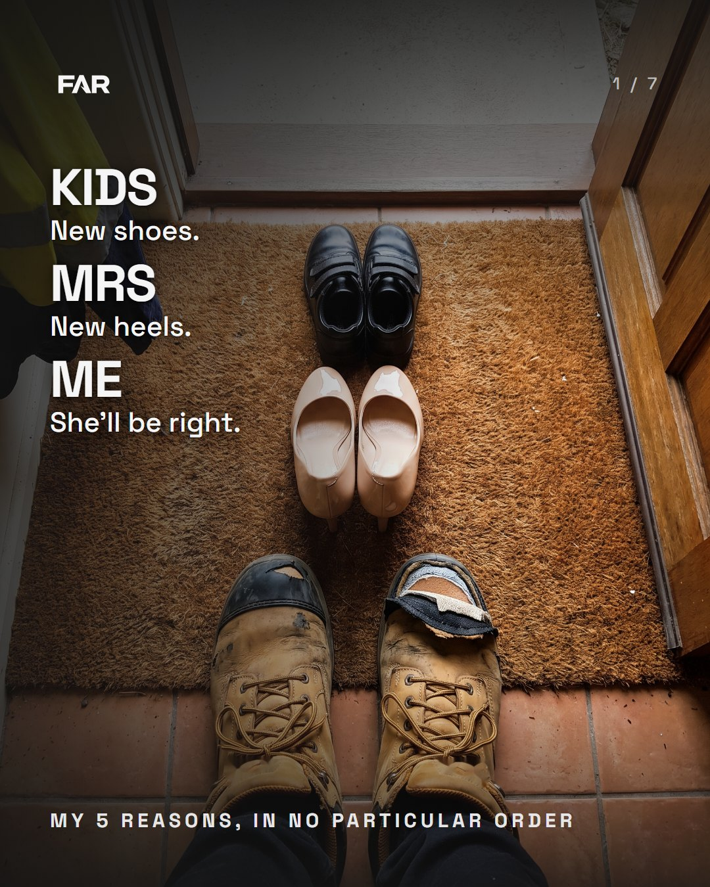
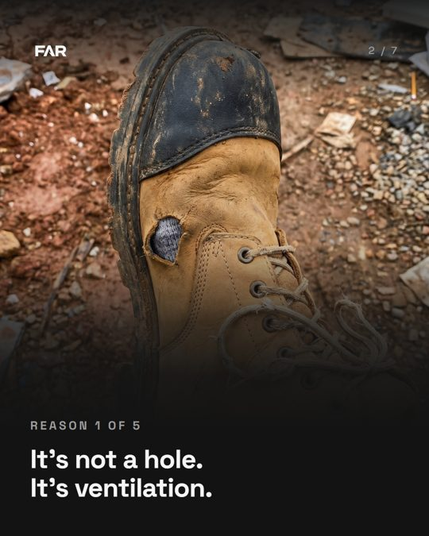
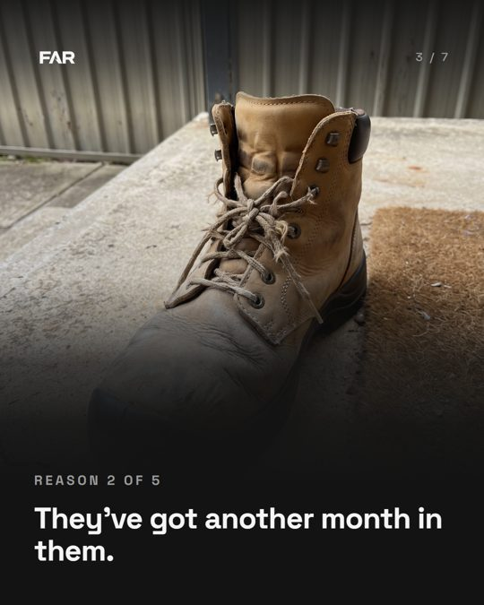
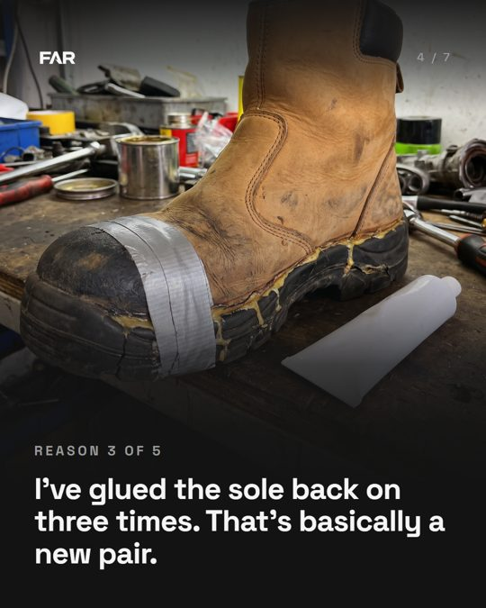
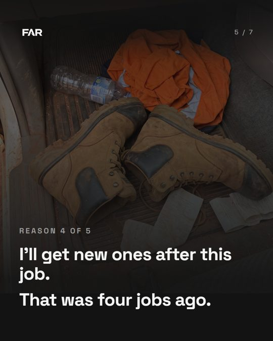
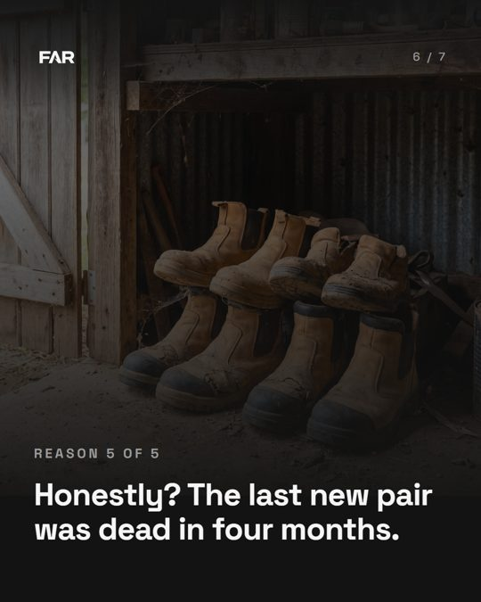
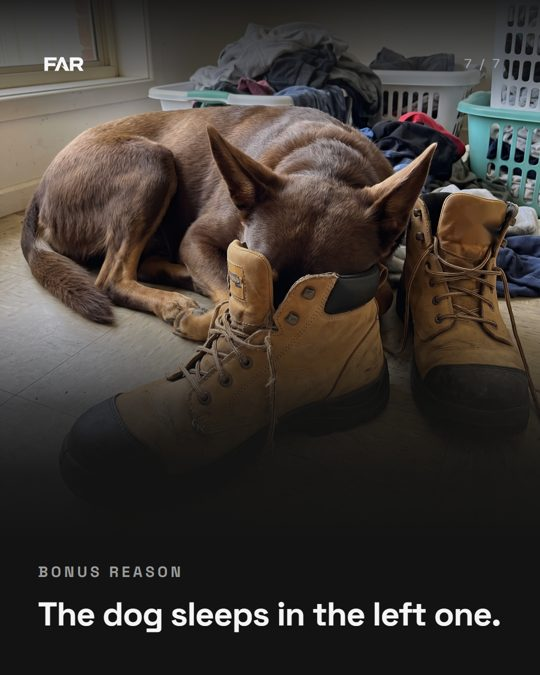
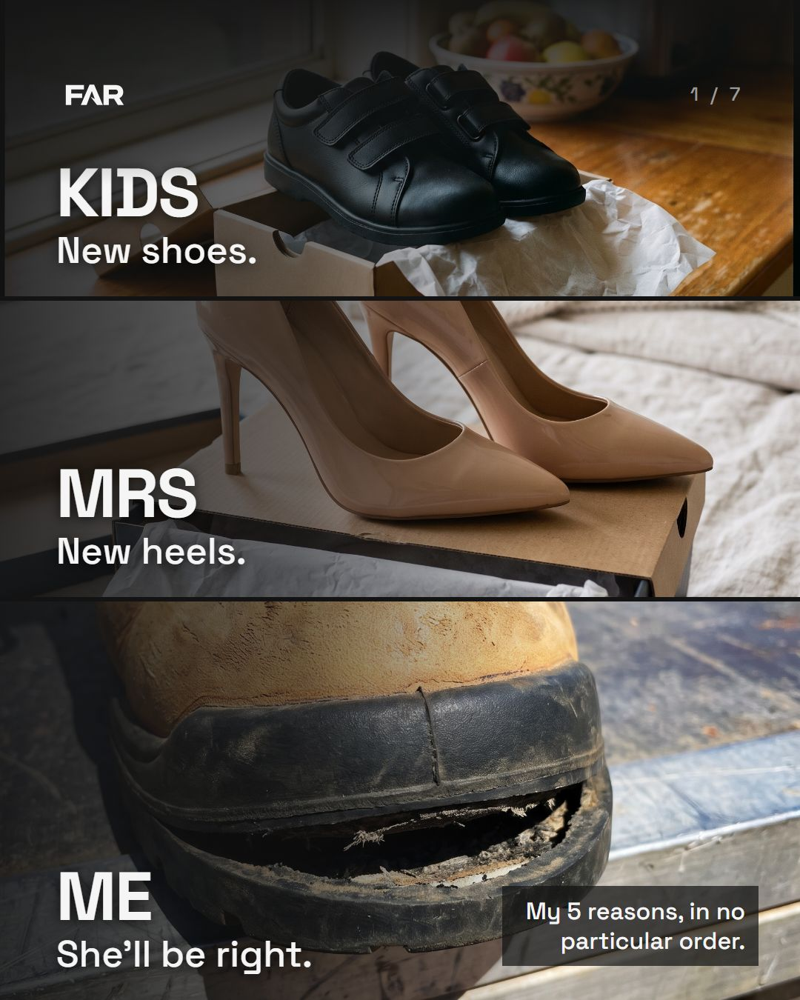

Slide 1: A, v3 on top
Same words as last night: KIDS / New shoes. MRS / New heels. ME / She'll be right. What changed is the picture: one place, one light, the boot doing something on the punch. The old strip collage is at the bottom for comparison. Videos loop like they will on Instagram, with no sound (the carousel's music track mutes a video's own audio).
A · The back door, v3
New kid shot (no more crossing legs: each foot steps on its own side, full resolution), and the line big, bold and centred so it reads while the clip plays. v3: the kid sped up 1.5x and the boots 1.4x so all three walk at the heels' pace. 5.5 s, every line up at least 1.8 s. Needs the AI label at upload.
B · The doormat, moving
Looking down at your own boots. The torn toe flaps as he wiggles his toes, and the ledger builds one line at a time. 4.8 s. Quieter than A: the reader is standing in the boots.
C · The doormat, still

The fallback if motion doesn't earn its place. One photo, three pairs, the ledger top left. Meta's must-label rule covers photorealistic video, so a still dodges the label question.







Two calls (answer in the session)
- A, B or C? Judge it on one thing: does it look like a real phone clip or like AI? Your eye decides that, not mine.
- Can anyone film the boot shot for real by Wednesday night? A dead pair with the sole hanging off, phone flat on the ground outside a back door, walk out past it. 10 seconds. It swaps into A and kills the AI label on the hero shot.